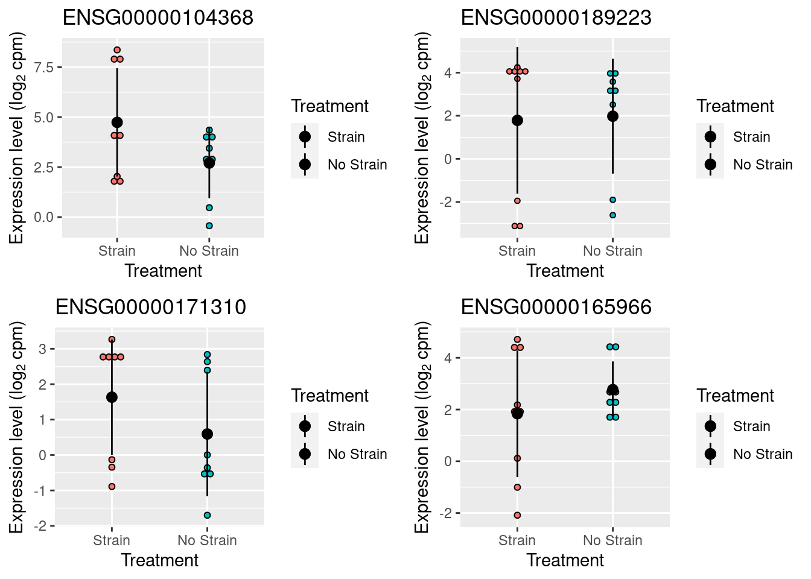

DE_analysis
Anthony Hung
2019-12-16
Last updated: 2020-01-18
Checks: 6 1
Knit directory: OAStrain/
This reproducible R Markdown analysis was created with workflowr (version 1.5.0). The Checks tab describes the reproducibility checks that were applied when the results were created. The Past versions tab lists the development history.
The R Markdown file has unstaged changes. To know which version of the R Markdown file created these results, you’ll want to first commit it to the Git repo. If you’re still working on the analysis, you can ignore this warning. When you’re finished, you can run wflow_publish to commit the R Markdown file and build the HTML.
Great job! The global environment was empty. Objects defined in the global environment can affect the analysis in your R Markdown file in unknown ways. For reproduciblity it’s best to always run the code in an empty environment.
The command set.seed(20191127) was run prior to running the code in the R Markdown file. Setting a seed ensures that any results that rely on randomness, e.g. subsampling or permutations, are reproducible.
Great job! Recording the operating system, R version, and package versions is critical for reproducibility.
Nice! There were no cached chunks for this analysis, so you can be confident that you successfully produced the results during this run.
Great job! Using relative paths to the files within your workflowr project makes it easier to run your code on other machines.
Great! You are using Git for version control. Tracking code development and connecting the code version to the results is critical for reproducibility. The version displayed above was the version of the Git repository at the time these results were generated.
Note that you need to be careful to ensure that all relevant files for the analysis have been committed to Git prior to generating the results (you can use wflow_publish or wflow_git_commit). workflowr only checks the R Markdown file, but you know if there are other scripts or data files that it depends on. Below is the status of the Git repository when the results were generated:
Ignored files:
Ignored: .Rhistory
Ignored: .Rproj.user/
Ignored: data/RUVsCPM.rds
Ignored: data/RUVsOut.rds
Ignored: data/filtered_counts.rds
Ignored: data/norm_filtered_counts.rds
Ignored: data/raw_counts_relabeled.rds
Unstaged changes:
Modified: analysis/DE_analysis.Rmd
Modified: analysis/Norm_filter.Rmd
Modified: analysis/check_expression.Rmd
Modified: analysis/technical_factors_analysis.Rmd
Modified: fig-limma-treatment-hit-1.eps
Note that any generated files, e.g. HTML, png, CSS, etc., are not included in this status report because it is ok for generated content to have uncommitted changes.
These are the previous versions of the R Markdown and HTML files. If you’ve configured a remote Git repository (see ?wflow_git_remote), click on the hyperlinks in the table below to view them.
| File | Version | Author | Date | Message |
|---|---|---|---|---|
| Rmd | 158fdf3 | Anthony Hung | 2020-01-16 | Use quant_normalization |
| html | 158fdf3 | Anthony Hung | 2020-01-16 | Use quant_normalization |
| Rmd | 4e7c93c | Anthony Hung | 2020-01-13 | Remove 18856 strain |
| html | 4e7c93c | Anthony Hung | 2020-01-13 | Remove 18856 strain |
| Rmd | 00a66fb | Anthony Hung | 2020-01-13 | run GO enrichment analysis |
| html | 00a66fb | Anthony Hung | 2020-01-13 | run GO enrichment analysis |
| Rmd | a04a1ac | Anthony Hung | 2020-01-13 | Add GO analysis |
| html | a04a1ac | Anthony Hung | 2020-01-13 | Add GO analysis |
| Rmd | 03b499e | Anthony Hung | 2020-01-13 | Add counts of significant DE Genes |
| html | 03b499e | Anthony Hung | 2020-01-13 | Add counts of significant DE Genes |
| html | 5eb29e8 | Anthony Hung | 2020-01-13 | Knit analysis files |
| html | f1425df | Anthony Hung | 2020-01-13 | Correct CPM Cutoff strategy |
| html | bd0e9ca | Anthony Hung | 2020-01-11 | Re-run analyses with real data |
| Rmd | 63f5760 | Anthony Hung | 2020-01-09 | Knit analysis files |
| html | 63f5760 | Anthony Hung | 2020-01-09 | Knit analysis files |
| Rmd | 5c249f2 | Anthony Hung | 2020-01-07 | Add functions to plot Limma results |
| html | 5c249f2 | Anthony Hung | 2020-01-07 | Add functions to plot Limma results |
| Rmd | ea5b72e | Anthony Hung | 2020-01-06 | Revise limma commands |
| html | ea5b72e | Anthony Hung | 2020-01-06 | Revise limma commands |
| Rmd | d80f643 | Anthony Hung | 2020-01-06 | Run Limma: |
| Rmd | b7948f0 | Anthony Hung | 2020-01-06 | DE analysis design matrix |
| Rmd | 9301706 | Anthony Hung | 2019-12-17 | build analysis files |
| Rmd | bb98d14 | Anthony Hung | 2019-12-16 | Add sampleinfo file |
| Rmd | c1f7cf7 | Anthony Hung | 2019-12-16 | Start up additional analysis files |
Introduction
library("limma")
library("plyr")
library("edgeR")
library("dplyr")
library("tidyr")
library("ashr")
library("ggplot2")
library("cowplot")
library("VennDiagram")
library("RUVSeq")
library("topGO")
#load in filtered count data, RUVs output
filt_counts <- readRDS("data/filtered_counts.rds")
filt_counts <- filt_counts$counts
RUVsOut <- readRDS("data/RUVsOut.rds")
# load gene annotations
gene_anno <- read.delim("data/gene-annotation.txt",
sep = "\t")
# load in reordered sample information
sampleinfo <- readRDS("data/Sample.info.RNAseq.reordered.csv")Limma doesn’t deal with technical replicates, so here I randomly sample 1 replicate for each of the 6 individualxcondition
#randomly sample 1 replicate from each set of 3 replicates
individuals <- c("18855", "18856", "19160")
treatments <- c("S", "U")
set.seed(1)
selected_samples <- c()
for(i in c("18856", "18855")){
for(t in treatments){
sample_num <- base::sample(c(1:3), 1)
selected_samples <- c(selected_samples, paste0(i, sep = "_", sample_num, sep = "_", t))
}
}
sample_num <- base::sample(c(2:3), 1)
selected_samples <- c(selected_samples, paste0("19160", sep = "_", sample_num, sep = "_", "U"))
sample_num <- base::sample(c(1:3), 1)
selected_samples <- c(selected_samples, paste0("19160", sep = "_", sample_num, sep = "_", "S"))
selected_samples[1] "18856_1_S" "18856_2_U" "18855_2_S" "18855_3_U" "19160_2_U" "19160_3_S"randomly_sampled_indices <- match(selected_samples, colnames(filt_counts))
single_filt_counts <- filt_counts[,randomly_sampled_indices]
anno <- pData(RUVsOut)[randomly_sampled_indices,]Perform DE analysis using edgeR
#Subset RUVsOut for only one of each of the samples (no technical replicates)
RUVsSubset <- RUVsOut[, RUVsOut$Sample_ID %in% selected_samples]
design <- model.matrix(~treatment + W_1 + W_2 + RIN, data=pData(RUVsSubset))
y <- DGEList(counts=counts(RUVsSubset), group=pData(RUVsSubset)$Individual)
y <- calcNormFactors(y, method="upperquartile")
y <- estimateGLMCommonDisp(y, design)
y <- estimateGLMTagwiseDisp(y, design)
fit <- glmFit(y, design)
lrt <- glmLRT(fit, coef=2)
gene_values <- topTags(lrt, n = nrow(lrt$coefficients), adjust.method="BH", sort.by = "logFC")Explore top hits
Boxplot function.
plot_gene <- function(v, g) {
# v - An df containing log2 counts per million
# g - character vector of a single gene
library("tidyr")
single_gene <- v[g, ]
single_gene_long <- as.data.frame(single_gene)
colnames(single_gene_long) <- "log2cpm"
single_gene_long$sample <- rownames(single_gene_long)
single_gene_long <- separate(single_gene_long, col = "sample", sep = "_",
into = c("Individual", "Replicate", "Treatment"))
single_gene_long$Treatment <- factor(single_gene_long$Treatment, levels = c("S", "U"))
single_gene_long$Treatment <- revalue(single_gene_long$Treatment, c("S"="Strain", "U"="No Strain"))
ggplot(single_gene_long, aes(x = Treatment, y = log2cpm, fill = Treatment)) +
geom_boxplot() +
labs(title = g, x = "Treatment", y = expression("Expression level (" * log[2] * " cpm)"))
}
plot_volcano <- function(x, qval) {
# Create volcano plot.
#
# x - data frame with topTable output
# (columns logFC, PValue, and FDR)
# qval - qvalue cutoff for calling a gene DE
#
stopifnot(is.data.frame(x), c("logFC", "PValue", "FDR") %in% colnames(x),
is.numeric(qval), qval <= 1, qval >= 0)
x$highlight <- ifelse(x$FDR < qval, "darkred", "gray75")
x$highlight <- factor(x$highlight, levels = c("darkred", "gray75"))
ggplot(x, aes(x = logFC, y = -log10(PValue), color = highlight)) +
geom_point(shape = 1) +
labs(x = "Log fold change",
y = expression(-log[10] * " p-value")) +
scale_color_identity(drop = FALSE) +
theme(legend.position = "none")
}
plot_pval_hist <- function(x, qval) {
# Create histogram of p-values.
#
# x - data frame with topTable and ash output (columns P.Value and qvalue)
# qval - qvalue cutoff for calling a gene DE
#
stopifnot(is.data.frame(x), c("PValue", "FDR") %in% colnames(x))
x$highlight <- ifelse(x$FDR < qval, "darkred", "gray75")
x$highlight <- factor(x$highlight, levels = c("darkred", "gray75"))
ggplot(x, aes(x = PValue, fill = highlight)) +
geom_histogram(position = "stack", binwidth = 0.01) +
scale_fill_identity(drop = FALSE) +
labs(x = "p-value", y = "Number of genes")
}Box plots of top genes
cpm <- cpm(filt_counts, log = T)
# top genes by p-value
#rename top_treatment genes to gene symbols for easier interpretation
top_treatment_top10 <- gene_anno$external_gene_name[match(head(rownames(gene_values@.Data[[1]]), n=10), gene_anno$ensembl_gene_id)]
top_treatment_top10 [1] USP9Y UTY TTTY15 PRKY UGT2B7 NLGN4Y ZFY KDM5D IGFL3 RPS4Y1
56858 Levels: A1BG A1BG-AS1 A1CF A2M A2M-AS1 A2ML1 A2ML1-AS1 A2ML1-AS2 ... ZZEF1p_treatment_1 <- plot_gene(cpm, rownames(gene_values@.Data[[1]])[1])
p_treatment_2 <- plot_gene(cpm, rownames(gene_values@.Data[[1]])[2])
p_treatment_3 <- plot_gene(cpm, rownames(gene_values@.Data[[1]])[3])
p_treatment_4 <- plot_gene(cpm, rownames(gene_values@.Data[[1]])[4])
ggsave("fig-limma-treatment-hit-1.eps", plot = p_treatment_1,
width = 7, height = 7, units = "in")
plot_grid(p_treatment_1, p_treatment_2, p_treatment_3, p_treatment_4)
Plots with significant genes highlighted
thresh <- 0.01
plot_volcano(x=data.frame(gene_values@.Data[[1]]), thresh)
plot_pval_hist(x=data.frame(gene_values@.Data[[1]]), thresh)
table(gene_values@.Data[[1]]$FDR < thresh)
FALSE TRUE
9569 878 Gene ontology analysis with topGO
Use topGO for GO analysis. It accounts for the nested graph structure of GO terms to prune the number of GO categories tested (Alexa et al. 2006). Essentially, it decreases the redundancy of the results.
First create the gene universe. This is all the genes tested for differential expression assigned a 1 for differentially expressed and 0 if not.
threshold <- 0.01
gene_universe <- as.numeric(gene_values@.Data[[1]]$FDR < threshold)
gene_universe <- factor(gene_universe)
names(gene_universe) <- rownames(gene_values@.Data[[1]])
head(gene_universe)ENSG00000114374 ENSG00000183878 ENSG00000233864 ENSG00000099725 ENSG00000171234
1 1 1 1 1
ENSG00000165246
1
Levels: 0 1Create the topGO data object. Only consider “Biological Process” categories and use the Mouse Ensembl database for annotation.
go_data <- new("topGOdata",
ontology = "BP",
allGenes = gene_universe,
nodeSize = 5,
annotationFun = annFUN.org,
mapping = "org.Hs.eg.db",
ID = "ensembl")
Building most specific GOs .....Loading required package: org.Hs.eg.db ( 9640 GO terms found. )
Build GO DAG topology .......... ( 13704 GO terms and 31801 relations. )
Annotating nodes ............... ( 9322 genes annotated to the GO terms. )Use the weight01 algorithm and score the tests with Fisher’s exact test.
go_test <- runTest(go_data, algorithm = "weight01", statistic = "fisher")
-- Weight01 Algorithm --
the algorithm is scoring 5453 nontrivial nodes
parameters:
test statistic: fisher
Level 19: 1 nodes to be scored (0 eliminated genes)
Level 18: 1 nodes to be scored (0 eliminated genes)
Level 17: 11 nodes to be scored (10 eliminated genes)
Level 16: 21 nodes to be scored (14 eliminated genes)
Level 15: 43 nodes to be scored (68 eliminated genes)
Level 14: 91 nodes to be scored (201 eliminated genes)
Level 13: 161 nodes to be scored (555 eliminated genes)
Level 12: 262 nodes to be scored (1267 eliminated genes)
Level 11: 409 nodes to be scored (2861 eliminated genes)
Level 10: 584 nodes to be scored (3916 eliminated genes)
Level 9: 757 nodes to be scored (5411 eliminated genes)
Level 8: 791 nodes to be scored (6736 eliminated genes)
Level 7: 809 nodes to be scored (7691 eliminated genes)
Level 6: 696 nodes to be scored (8356 eliminated genes)
Level 5: 442 nodes to be scored (8735 eliminated genes)
Level 4: 248 nodes to be scored (8956 eliminated genes)
Level 3: 104 nodes to be scored (9083 eliminated genes)
Level 2: 21 nodes to be scored (9153 eliminated genes)
Level 1: 1 nodes to be scored (9213 eliminated genes)Keep the results with a Fisher’s exact test p-value < 0.01.
go_table <- GenTable(go_data, weightFisher = go_test,
orderBy = "weightFisher", ranksOf = "weightFisher",
topNodes = sum(score(go_test) < .01))
go_table GO.ID Term Annotated
1 GO:0030198 extracellular matrix organization 206
2 GO:0045540 regulation of cholesterol biosynthetic p... 39
3 GO:0010469 regulation of receptor activity 176
4 GO:0055114 oxidation-reduction process 619
5 GO:0098869 cellular oxidant detoxification 54
6 GO:0007267 cell-cell signaling 777
7 GO:0007155 cell adhesion 685
8 GO:0071281 cellular response to iron ion 8
9 GO:0050919 negative chemotaxis 21
10 GO:0010951 negative regulation of endopeptidase act... 110
11 GO:0006695 cholesterol biosynthetic process 56
12 GO:0051897 positive regulation of protein kinase B ... 69
13 GO:0048662 negative regulation of smooth muscle cel... 22
14 GO:0007271 synaptic transmission, cholinergic 7
15 GO:0007588 excretion 15
16 GO:0051781 positive regulation of cell division 43
17 GO:0060021 palate development 63
18 GO:0060600 dichotomous subdivision of an epithelial... 8
19 GO:0042474 middle ear morphogenesis 12
20 GO:0048265 response to pain 5
21 GO:0008217 regulation of blood pressure 70
22 GO:0007413 axonal fasciculation 13
23 GO:0032956 regulation of actin cytoskeleton organiz... 191
24 GO:0035094 response to nicotine 18
25 GO:0006805 xenobiotic metabolic process 35
26 GO:0000305 response to oxygen radical 21
27 GO:1902106 negative regulation of leukocyte differe... 46
28 GO:0003223 ventricular compact myocardium morphogen... 6
29 GO:0007601 visual perception 64
30 GO:0008299 isoprenoid biosynthetic process 15
31 GO:0031290 retinal ganglion cell axon guidance 10
32 GO:0071636 positive regulation of transforming grow... 10
33 GO:0002063 chondrocyte development 20
34 GO:0042493 response to drug 217
35 GO:0001658 branching involved in ureteric bud morph... 33
36 GO:0007156 homophilic cell adhesion via plasma memb... 53
37 GO:0006954 inflammatory response 266
38 GO:0010463 mesenchymal cell proliferation 32
39 GO:0032836 glomerular basement membrane development 7
40 GO:0002480 antigen processing and presentation of e... 7
41 GO:0090331 negative regulation of platelet aggregat... 7
42 GO:0008544 epidermis development 158
43 GO:0051965 positive regulation of synapse assembly 28
44 GO:0009952 anterior/posterior pattern specification 117
45 GO:0030890 positive regulation of B cell proliferat... 12
46 GO:0045766 positive regulation of angiogenesis 77
47 GO:0006501 C-terminal protein lipidation 23
48 GO:0000768 syncytium formation by plasma membrane f... 23
49 GO:0001764 neuron migration 77
50 GO:1901616 organic hydroxy compound catabolic proce... 23
51 GO:0007186 G-protein coupled receptor signaling pat... 288
52 GO:0015850 organic hydroxy compound transport 83
53 GO:0000302 response to reactive oxygen species 150
54 GO:0007166 cell surface receptor signaling pathway 1522
55 GO:0060415 muscle tissue morphogenesis 46
56 GO:0019433 triglyceride catabolic process 8
57 GO:0032026 response to magnesium ion 8
58 GO:0015909 long-chain fatty acid transport 28
59 GO:0009611 response to wounding 365
60 GO:0045987 positive regulation of smooth muscle con... 13
61 GO:0008347 glial cell migration 29
62 GO:0001525 angiogenesis 271
63 GO:0051384 response to glucocorticoid 74
64 GO:0030199 collagen fibril organization 31
65 GO:0001501 skeletal system development 306
66 GO:0043410 positive regulation of MAPK cascade 272
67 GO:0042127 regulation of cell proliferation 867
68 GO:0030154 cell differentiation 2089
69 GO:0007411 axon guidance 135
70 GO:0060349 bone morphogenesis 51
71 GO:0033280 response to vitamin D 21
72 GO:2000353 positive regulation of endothelial cell ... 9
73 GO:0042744 hydrogen peroxide catabolic process 9
74 GO:0045880 positive regulation of smoothened signal... 20
75 GO:0050776 regulation of immune response 449
76 GO:0030574 collagen catabolic process 40
77 GO:0006809 nitric oxide biosynthetic process 36
78 GO:0030828 positive regulation of cGMP biosynthetic... 5
79 GO:0016114 terpenoid biosynthetic process 5
80 GO:0060100 positive regulation of phagocytosis, eng... 5
81 GO:0060539 diaphragm development 5
82 GO:0045080 positive regulation of chemokine biosynt... 5
83 GO:0035930 corticosteroid hormone secretion 5
84 GO:0046851 negative regulation of bone remodeling 5
85 GO:2000192 negative regulation of fatty acid transp... 5
86 GO:0061302 smooth muscle cell-matrix adhesion 5
87 GO:0097151 positive regulation of inhibitory postsy... 5
88 GO:0090193 positive regulation of glomerulus develo... 5
89 GO:0002544 chronic inflammatory response 5
90 GO:0090270 regulation of fibroblast growth factor p... 5
91 GO:0014820 tonic smooth muscle contraction 5
92 GO:0042472 inner ear morphogenesis 38
93 GO:0001942 hair follicle development 58
94 GO:0048663 neuron fate commitment 21
95 GO:0010575 positive regulation of vascular endothel... 15
96 GO:0016486 peptide hormone processing 15
97 GO:0042572 retinol metabolic process 10
98 GO:0036342 post-anal tail morphogenesis 10
99 GO:0030195 negative regulation of blood coagulation 24
100 GO:0044259 multicellular organismal macromolecule m... 71
101 GO:0046456 icosanoid biosynthetic process 21
102 GO:0006833 water transport 7
103 GO:0042632 cholesterol homeostasis 29
104 GO:0001937 negative regulation of endothelial cell ... 22
105 GO:0055088 lipid homeostasis 54
106 GO:0034599 cellular response to oxidative stress 203
107 GO:0007568 aging 189
108 GO:0008285 negative regulation of cell proliferatio... 411
109 GO:0030326 embryonic limb morphogenesis 91
110 GO:0003094 glomerular filtration 13
111 GO:0031638 zymogen activation 27
112 GO:0021602 cranial nerve morphogenesis 12
113 GO:0007586 digestion 31
114 GO:0001913 T cell mediated cytotoxicity 14
115 GO:2001053 regulation of mesenchymal cell apoptotic... 6
116 GO:0019371 cyclooxygenase pathway 6
117 GO:0060004 reflex 6
118 GO:0021520 spinal cord motor neuron cell fate speci... 6
119 GO:0072124 regulation of glomerular mesangial cell ... 6
120 GO:0048791 calcium ion-regulated exocytosis of neur... 6
121 GO:0006069 ethanol oxidation 6
122 GO:0035810 positive regulation of urine volume 6
123 GO:0071625 vocalization behavior 6
124 GO:0006703 estrogen biosynthetic process 6
125 GO:0009247 glycolipid biosynthetic process 43
126 GO:0071548 response to dexamethasone 27
127 GO:0030258 lipid modification 165
128 GO:0008037 cell recognition 48
129 GO:0007157 heterophilic cell-cell adhesion via plas... 23
130 GO:0048844 artery morphogenesis 38
131 GO:0007422 peripheral nervous system development 37
132 GO:0036066 protein O-linked fucosylation 11
Significant Expected weightFisher
1 56 17.10 1.4e-12
2 17 3.24 2.3e-09
3 37 14.61 7.4e-09
4 78 51.40 6.4e-08
5 19 4.48 1.9e-06
6 96 64.51 4.7e-06
7 100 56.88 7.8e-06
8 6 0.66 7.8e-06
9 9 1.74 2.1e-05
10 19 9.13 2.2e-05
11 25 4.65 2.4e-05
12 17 5.73 3.4e-05
13 9 1.83 5.3e-05
14 5 0.58 7.1e-05
15 7 1.25 9.4e-05
16 12 3.57 0.00011
17 15 5.23 0.00015
18 5 0.66 0.00018
19 6 1.00 0.00019
20 4 0.42 0.00022
21 19 5.81 0.00032
22 6 1.08 0.00033
23 20 15.86 0.00033
24 7 1.49 0.00037
25 10 2.91 0.00052
26 9 1.74 0.00056
27 11 3.82 0.00056
28 4 0.50 0.00062
29 14 5.31 0.00062
30 8 1.25 0.00068
31 5 0.83 0.00069
32 5 0.83 0.00069
33 7 1.66 0.00078
34 29 18.02 0.00100
35 9 2.74 0.00108
36 12 4.40 0.00109
37 42 22.09 0.00112
38 9 2.66 0.00133
39 4 0.58 0.00135
40 4 0.58 0.00135
41 4 0.58 0.00135
42 27 13.12 0.00139
43 8 2.32 0.00151
44 18 9.71 0.00179
45 5 1.00 0.00188
46 16 6.39 0.00194
47 7 1.91 0.00199
48 8 1.91 0.00211
49 14 6.39 0.00212
50 6 1.91 0.00213
51 44 23.91 0.00221
52 18 6.89 0.00239
53 23 12.45 0.00243
54 164 126.37 0.00246
55 10 3.82 0.00248
56 4 0.66 0.00252
57 4 0.66 0.00252
58 8 2.32 0.00282
59 57 30.31 0.00285
60 5 1.08 0.00285
61 6 2.41 0.00286
62 48 22.50 0.00296
63 13 6.14 0.00303
64 8 2.57 0.00307
65 48 25.41 0.00324
66 37 22.58 0.00352
67 133 71.99 0.00354
68 256 173.45 0.00354
69 29 11.21 0.00366
70 10 4.23 0.00418
71 6 1.74 0.00421
72 4 0.75 0.00423
73 4 0.75 0.00423
74 6 1.66 0.00452
75 39 37.28 0.00460
76 9 3.32 0.00468
77 8 2.99 0.00497
78 3 0.42 0.00502
79 3 0.42 0.00502
80 3 0.42 0.00502
81 3 0.42 0.00502
82 3 0.42 0.00502
83 3 0.42 0.00502
84 3 0.42 0.00502
85 3 0.42 0.00502
86 3 0.42 0.00502
87 3 0.42 0.00502
88 3 0.42 0.00502
89 3 0.42 0.00502
90 3 0.42 0.00502
91 3 0.42 0.00502
92 9 3.16 0.00534
93 11 4.82 0.00561
94 8 1.74 0.00570
95 5 1.25 0.00578
96 5 1.25 0.00658
97 4 0.83 0.00659
98 4 0.83 0.00659
99 13 1.99 0.00672
100 16 5.90 0.00674
101 8 1.74 0.00681
102 3 0.58 0.00688
103 7 2.41 0.00752
104 6 1.83 0.00754
105 12 4.48 0.00768
106 26 16.85 0.00797
107 20 15.69 0.00826
108 66 34.13 0.00834
109 15 7.56 0.00931
110 6 1.08 0.00934
111 7 2.24 0.00934
112 5 1.00 0.00937
113 6 2.57 0.00939
114 4 1.16 0.00941
115 3 0.50 0.00942
116 3 0.50 0.00942
117 3 0.50 0.00942
118 3 0.50 0.00942
119 3 0.50 0.00942
120 3 0.50 0.00942
121 3 0.50 0.00942
122 3 0.50 0.00942
123 3 0.50 0.00942
124 3 0.50 0.00942
125 6 3.57 0.00942
126 4 2.24 0.00945
127 15 13.70 0.00946
128 12 3.99 0.00947
129 6 1.91 0.00950
130 9 3.16 0.00957
131 7 3.07 0.00965
132 4 0.91 0.00969There are 132 significant results.
sessionInfo()R version 3.4.3 (2017-11-30)
Platform: x86_64-pc-linux-gnu (64-bit)
Running under: Scientific Linux 7.4 (Nitrogen)
Matrix products: default
BLAS/LAPACK: /software/openblas-0.2.19-el7-x86_64/lib/libopenblas_haswellp-r0.2.19.so
locale:
[1] LC_CTYPE=en_US.UTF-8 LC_NUMERIC=C
[3] LC_TIME=en_US.UTF-8 LC_COLLATE=en_US.UTF-8
[5] LC_MONETARY=en_US.UTF-8 LC_MESSAGES=en_US.UTF-8
[7] LC_PAPER=en_US.UTF-8 LC_NAME=C
[9] LC_ADDRESS=C LC_TELEPHONE=C
[11] LC_MEASUREMENT=en_US.UTF-8 LC_IDENTIFICATION=C
attached base packages:
[1] stats4 parallel grid stats graphics grDevices utils
[8] datasets methods base
other attached packages:
[1] org.Hs.eg.db_3.5.0 topGO_2.30.1
[3] SparseM_1.77 GO.db_3.5.0
[5] AnnotationDbi_1.40.0 graph_1.56.0
[7] RUVSeq_1.12.0 EDASeq_2.12.0
[9] ShortRead_1.36.1 GenomicAlignments_1.14.2
[11] SummarizedExperiment_1.8.1 DelayedArray_0.4.1
[13] matrixStats_0.55.0 Rsamtools_1.30.0
[15] GenomicRanges_1.30.3 GenomeInfoDb_1.14.0
[17] Biostrings_2.46.0 XVector_0.18.0
[19] IRanges_2.12.0 S4Vectors_0.16.0
[21] BiocParallel_1.12.0 Biobase_2.38.0
[23] BiocGenerics_0.24.0 VennDiagram_1.6.20
[25] futile.logger_1.4.3 cowplot_0.9.3
[27] ggplot2_3.2.1 ashr_2.2-39
[29] tidyr_1.0.0 dplyr_0.8.3
[31] edgeR_3.20.9 plyr_1.8.4
[33] limma_3.34.9
loaded via a namespace (and not attached):
[1] colorspace_1.4-1 hwriter_1.3.2 ellipsis_0.3.0
[4] rprojroot_1.3-2 fs_1.3.1 farver_2.0.1
[7] bit64_0.9-7 codetools_0.2-15 splines_3.4.3
[10] R.methodsS3_1.7.1 pscl_1.5.2 doParallel_1.0.15
[13] DESeq_1.30.0 geneplotter_1.56.0 knitr_1.26
[16] zeallot_0.1.0 workflowr_1.5.0 annotate_1.56.2
[19] R.oo_1.23.0 compiler_3.4.3 httr_1.4.1
[22] backports_1.1.5 assertthat_0.2.1 Matrix_1.2-18
[25] lazyeval_0.2.2 later_1.0.0 formatR_1.7
[28] htmltools_0.4.0 prettyunits_1.0.2 tools_3.4.3
[31] gtable_0.3.0 glue_1.3.1 GenomeInfoDbData_1.0.0
[34] Rcpp_1.0.3 vctrs_0.2.0 rtracklayer_1.38.3
[37] iterators_1.0.12 xfun_0.11 stringr_1.4.0
[40] lifecycle_0.1.0 XML_3.98-1.20 zlibbioc_1.24.0
[43] MASS_7.3-51.4 scales_1.1.0 aroma.light_3.8.0
[46] hms_0.5.2 promises_1.1.0 lambda.r_1.2.4
[49] RColorBrewer_1.1-2 yaml_2.2.0 memoise_1.1.0
[52] biomaRt_2.34.2 latticeExtra_0.6-28 stringi_1.4.3
[55] RSQLite_2.1.4 SQUAREM_2017.10-1 genefilter_1.60.0
[58] foreach_1.4.7 RMySQL_0.10.17 GenomicFeatures_1.30.3
[61] truncnorm_1.0-8 rlang_0.4.2 pkgconfig_2.0.3
[64] bitops_1.0-6 evaluate_0.14 lattice_0.20-35
[67] purrr_0.3.3 labeling_0.3 bit_1.1-14
[70] tidyselect_0.2.5 magrittr_1.5 R6_2.4.1
[73] DBI_1.0.0 pillar_1.4.2 whisker_0.4
[76] withr_2.1.2 survival_2.41-3 RCurl_1.95-4.12
[79] mixsqp_0.2-2 tibble_2.1.3 crayon_1.3.4
[82] futile.options_1.0.1 rmarkdown_1.18 progress_1.2.2
[85] locfit_1.5-9.1 blob_1.2.0 git2r_0.26.1
[88] digest_0.6.23 xtable_1.8-4 httpuv_1.5.2
[91] R.utils_2.9.2 munsell_0.5.0